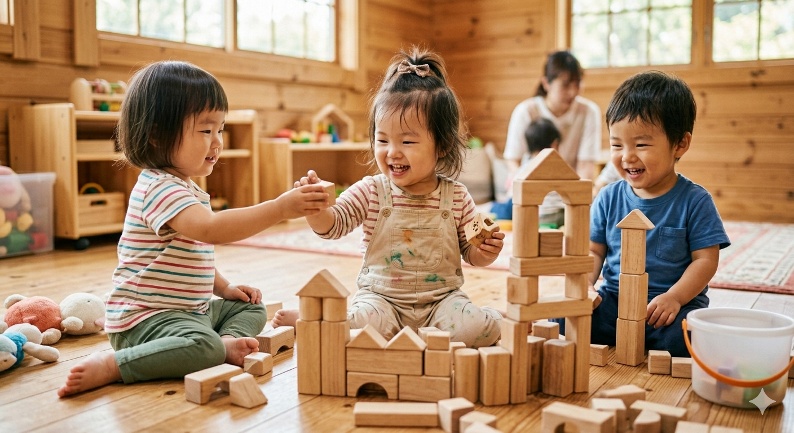
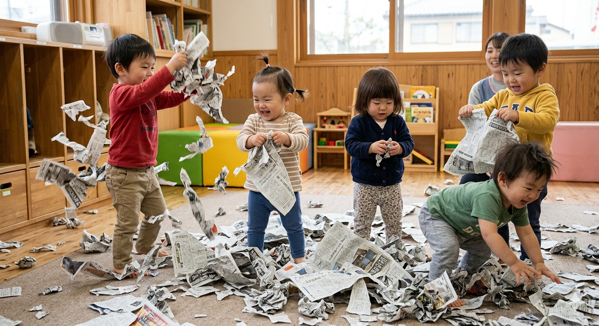
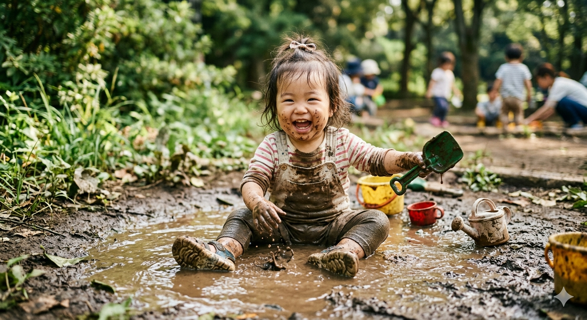
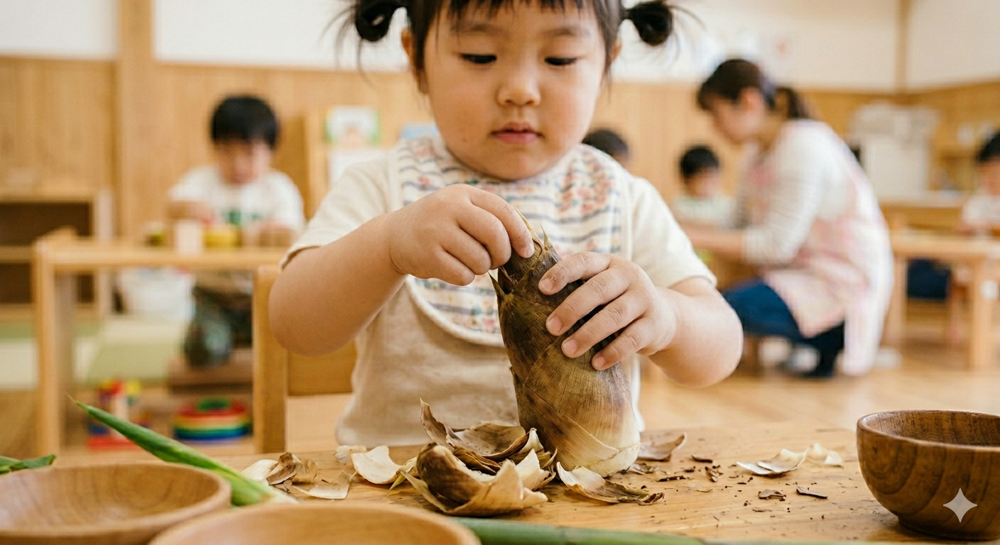

日々のあそび
こどもたちはあそびの中で、ゆっくりと育っていきます。
どんなあそびをしているかご紹介します。
①じゆうあそび
好きなおもちゃや遊びを、自分のペースで楽しみます。
「やりたい」という気持ちを大切にしながら、無理なく過ごせる時間です。

②感覚あそび
当園では、乳幼児期に最も大切とされる「五感（見る・触る・聞く・嗅ぐ・味わう）」を刺激する「感覚遊び」を日々の保育に積極的に取り入れています。
水や砂、泥、片栗粉粘土、寒天、新聞紙など、形がさまざまに変化する素材に触れることで、子どもたちは「おもしろい！」「これはどうなるのかな？」と好奇心を無限に広げていきます。
小規模保育園ならではの強みを活かし、一人ひとりの「やってみたい」という意欲や、「触るのが少し怖いな」という慎重な気持ちにも寄り添いながら、保育者が温かく見守る中で、安心して心と体の根っこを育んでいきます。

③外あそび
当園では、お日様の光を浴び、心地よい風を感じながら過ごす「外遊び」の時間を大切にしています。
園庭や近隣の公園は、子どもたちにとって宝箱のような場所。砂や泥のひんやりした感触、草花の鮮やかな色、木の実の手触りなど、外の世界には五感を刺激する「感覚遊び」の要素が溢れています。
小規模保育園だからこそ、大人数に合わせる必要はありません。一人ひとりが「見つけた！」「おもしろそう！」と思った瞬間に保育者がそっと寄り添い、小さな発見や探究心をどこまでも応援します。

④食に触れる遊び
五感でワクワク！「食に触れる遊び」
当園では、日々の保育の中に、五感を使って食材と仲良くなる「食に触れる遊び（食育）」を積極的に取り入れています。
給食に出る前の本物の野菜に触れてみたり、トウモロコシの皮をむいたり、出汁（だし）の匂いを嗅いでみたり。乳幼児期の子どもたちにとって、食材は最高の「感覚遊び」の素材です。
「触るとツルツルしてる！」「ちぎるといい匂いがする！」といった新鮮な驚きが、子どもたちの好奇心を刺激します。
小規模保育園ならではの家庭的な雰囲気を活かし、栄養士や保育者が一人ひとりの「これなぁに？」にじっくりと付き合いながら、食への興味と「おいしい笑顔」をのびのびと育んでいます。
